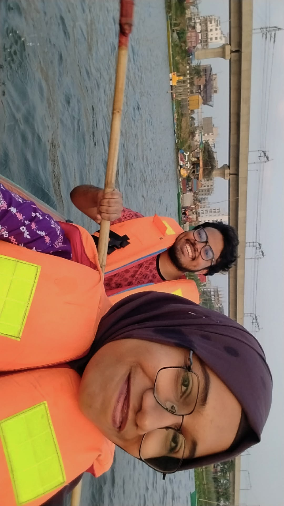
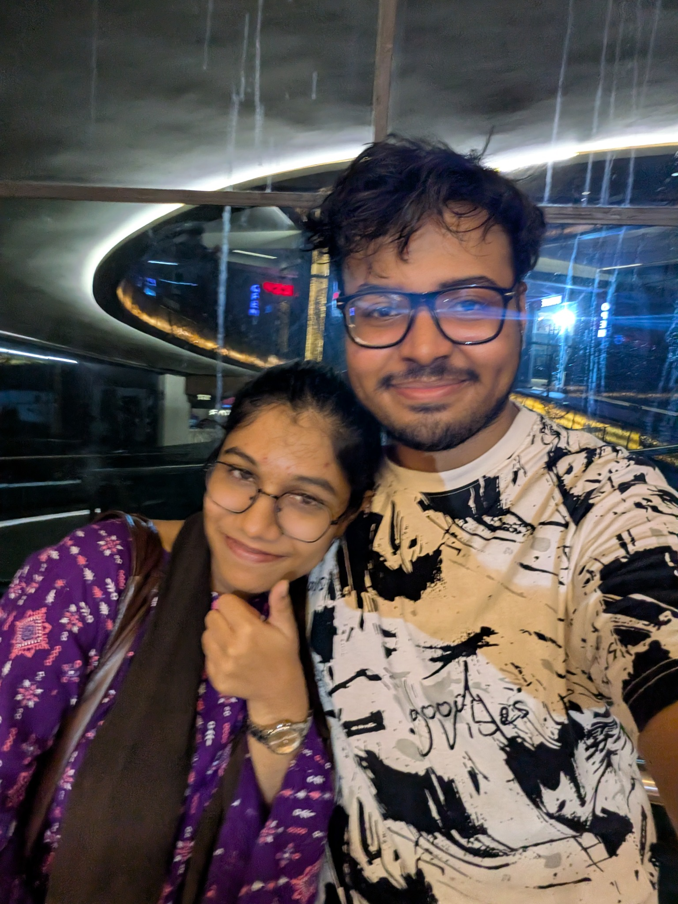
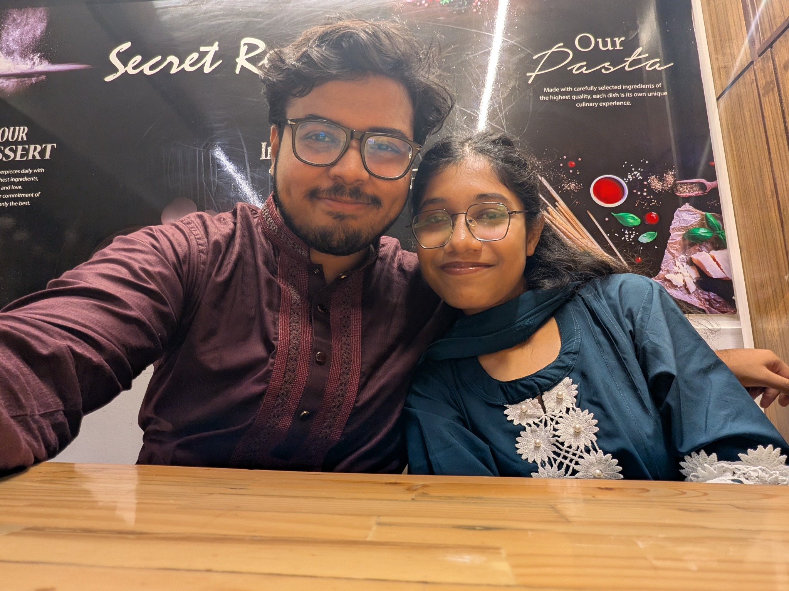

The boat-day confession energy
This is where you shouted “I LOVE YOU!” and I got so shy I was flapping my hands, blushing, laughing, and saying “jah.” An extremely normal reaction. Obviously.
A tiny corner of the internet for the girl who was supposed to be just another new face… and somehow became home.
Made with love, questionable decisions, and approximately 900 feelings I cannot say normally.
Open our little universe ↓P.S. Any resemblance to two idiots in love is entirely intentional.
Eid. Tasty Treat. A room full of people. And you, sitting across from me like you had absolutely no idea what kind of plot you were walking into.
I noticed that you refused to shake hands when people tried. I remember being weirdly happy about it, thinking you knew your boundaries. We took pictures. We laughed — well, you didn't laugh that much. Then Minecraft happened, and I learned that trying to explain a setup to you was a losing battle because you'd already done the next step before I could send the instructions.
Himel was apparently running a matchmaking operation in the background, too. He could have picked anyone for his team, but picked you after I'd already said my team was full. The audacity.
Then came Instagram, your comment about me cutting your face out of a photo, reels, conversations, and the yellow-saree pictures that made a stranger feel a little less like a stranger.
Then Azampur: my best blue T-shirt (yes, the one I still have), coffee with too much sugar even though you wanted none — I'm sorry — and a black cat that was objectively cool. Somewhere between those ordinary moments, I started thinking: “Fuck it. I think I like her.”
Not every date is written down. The moments are real, though — and the timeline is allowed to be a little chaotic, just like us.
I thought I was helping. You kept being one step ahead. This was apparently a preview of our entire dynamic.
You offered to take me inside Cantonment, then sent me pictures in a yellow saree at night. We were still supposed to be strangers. Sure.
I was on a ship heading to the Sundarbans. We'd messed things up, but you forgave me. Then you told me you loved me. I said it back. And just like that, we became nibba nibbi.
My favourite notification was never a notification. It was you saying it.
The top floor was empty, apart from one passenger at the front who wasn't paying attention to us. We had our first kiss — not exactly a shy little movie kiss — while “Kiss Me Like a Sailor” played in my head like my brain had hired a soundtrack supervisor.
Our first full-day outing outside Uttara. A cool library, a whole day together, and the discovery that the best part of going somewhere new is getting to be there with you.
I was technically an outsider, but I got into your university anyway. We wandered around, kissed in a classroom, then went to a park and sat in each other's arms. Casual Saturday behaviour, apparently.
Three days together in Kuakata, living our little husband-and-wife fantasy. A whole small world that belonged to us for a while.
I came from Khulna for a single day, spent the whole day with you, then you stayed with me to say goodbye and see me off at the train station. It was an amazing day. I still think about how worth it every minute was.
Three little snapshots for now. More photos can be added later by putting them in the assets folder and updating this page.

This is where you shouted “I LOVE YOU!” and I got so shy I was flapping my hands, blushing, laughing, and saying “jah.” An extremely normal reaction. Obviously.

One of those photos that doesn't need a complicated story. You're beside me. I'm beside you. That's the whole point.

Another tiny piece of our life together. The kind of ordinary moment I hope we get to keep collecting for years.
Photo note: the boat memory and the double-decker first kiss are different moments in our story.
I can't include commercial music files that weren't provided, but these links make it easy to play the songs. Add more tracks whenever you want.
Tap the cards. They contain tiny, very serious scientific findings about us.
I know we're already us. But I still want to ask you out — to make a plan, come see you, steal a few hours from the week, walk around somewhere, watch something late, or do absolutely nothing as long as it's with you.
Every time I'm with you, even if we only get five or six hours, something in me believes this is permanent. That we'll keep finding our way back to each other, growing older, collecting stories, and annoying supermarket employees for an unreasonable amount of time.
I love you. I love the beginning we got, the messy middle we're living, and the future I keep imagining with you.
Made for you, with all my love. Happy anniversary, Jaan.